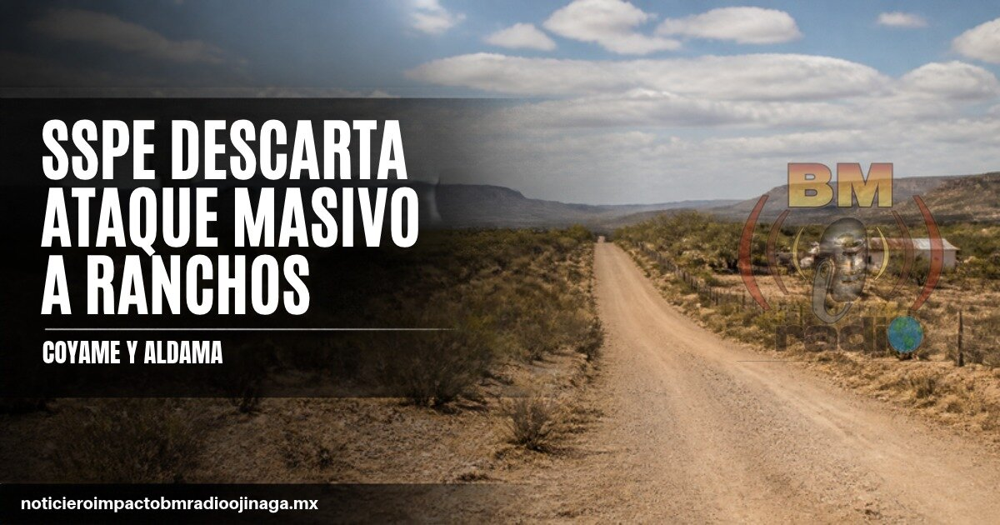
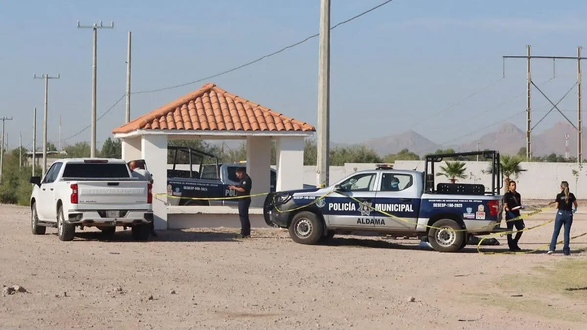
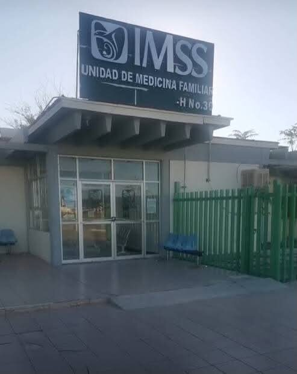
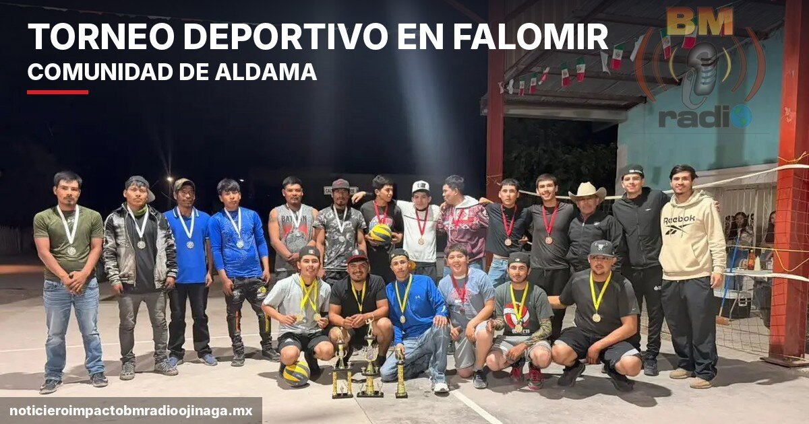
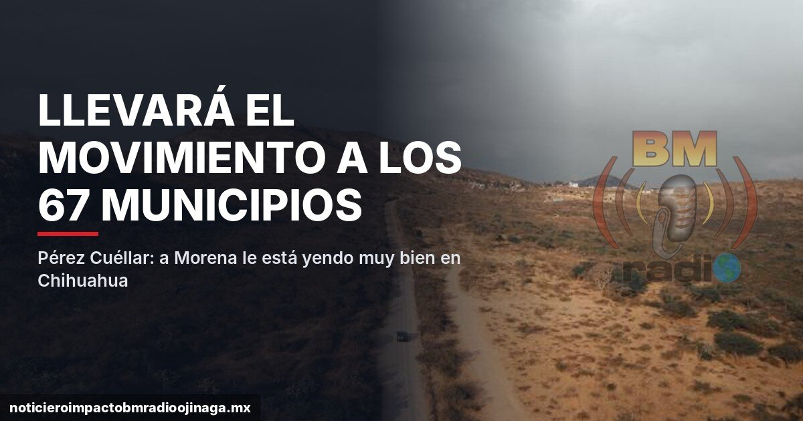

Nacional
Productores de ganado del norte del país, incluidos los de Chihuahua, rechazan la propuesta de ampliar en 2027 los cupos para importar carne sin pagar arancel, que en el caso de la carne de res pasarían de 70 mil a 150 mil toneladas. Advierten que la medida afectaría a los productores nacionales, cuyo ganado en pie bajó este año de 83 a 72 pesos por kilo, mientras que el bistec se sigue vendiendo entre 240 y 260 pesos. Los ganaderos piden a Hacienda y a Economía no autorizar más carne de países sin tratado comercial con México, como Brasil y Argentina.
Frontera
Desde la mañana de este lunes, clientes de Chase, Bank of America, Wells Fargo, U.S. Bank y Truist reportaron problemas para entrar a la banca en línea y a las aplicaciones, consultar saldos y hacer pagos o transferencias. También hubo quejas por fallas en Zelle. Chase informó que se trata de un problema técnico y no de un ataque cibernético, y que trabaja para resolverlo lo antes posible. Hasta esta tarde los bancos no habían explicado la causa ni confirmado que el servicio estuviera restablecido. Si tiene cuenta en alguno de estos bancos, revise sus movimientos cuando el servicio se normalice.
Estatal
El Gobierno del Estado registra alrededor de 9 mil 500 atenciones a personas desplazadas por la violencia del crimen organizado, y la mayoría de los reportes se concentra en cinco municipios, de acuerdo con reportes periodísticos. Las autoridades estatales reconocen que no existe una cifra precisa de cuántas personas han tenido que dejar sus hogares. El dato se conoce mientras habitantes de Aldama y Coyame denuncian el abandono de ranchos en la región.
Local
El Servicio Meteorológico Nacional pronostica que el frente frío número 6 dejará temperaturas de entre 0 y -5 grados en las zonas serranas de Chihuahua durante la madrugada del martes, con rachas de viento de 30 a 50 kilómetros por hora en el estado. En Ojinaga se espera clima templado, con máximas de alrededor de 24 grados, mínimas cercanas a 11 y viento del noreste.
Policiaca
La denuncia que está circulando en medios genera una precisión muy importante: la quema de más de 20 ranchos no está confirmada oficialmente por la autoridad. La publicación del 15 de noviembre de 2026 que informa del incendio de ranchos aparece en varios medios y coincide con los señalamientos de productores y habitantes de Aldama y Coyame. Sin embargo, la Secretaría de Seguridad Pública Estatal (SSPE) descartó que hubiera ocurrido un ataque masivo contra ranchos en ambos municipios. La pregunta es evidente: ¿ocultan los hechos?
Nacional
Organizaciones defensoras de la niñez alertaron que en una caravana de cerca de mil migrantes que avanza por Chiapas rumbo a Estados Unidos viajan alrededor de 40 niñas, niños y adolescentes, además de seis mujeres embarazadas. Esto ocurre mientras el presidente Donald Trump amenaza con duplicar los aranceles a México si no se frenan las caravanas.
Nacional
El Buen Fin termina mañana martes 17 de noviembre. En el primer día, la Profeco recibió 32 quejas, todas resueltas por conciliación, y logró que se devolvieran más de 229 mil pesos a los consumidores. Las quejas más comunes fueron por promociones y ofertas no respetadas. La Profeco recomienda comparar precios en elbuenfin.profeco.gob.mx y reportar cualquier abuso al Teléfono del Consumidor, que atiende de 9:00 a 19:00 horas.
Policiaca
Dos mujeres de alrededor de 25 años fueron privadas de la libertad la noche del sábado en una colonia al norte de la ciudad de Chihuahua. Una fue localizada sin vida el domingo en la mañana, en un camino de terracería entre las colonias Vendanova y Granjas del Valle. La otra fue encontrada con vida y herida de bala en la avenida de las Industrias, y fue trasladada a un hospital. Agentes ministeriales investigan el caso.
Nacional
La presidenta Claudia Sheinbaum llegó a Shenzhen, China, donde fue recibida con música, flores y alfombra roja para participar en la cumbre del Foro de Cooperación Económica Asia-Pacífico (APEC). Viajó en un vuelo comercial que salió la madrugada del domingo de la Ciudad de México, con escala en Tijuana. Del 17 al 19 de noviembre presentará el Plan México ante empresarios y se reunirá con el presidente de China, Xi Jinping. Su regreso está previsto para la madrugada del viernes 20, a tiempo para el aniversario de la Revolución. Mientras tanto, Rosa Icela Rodríguez encabezará las conferencias matutinas.
Policiaca
Según medios estadounidenses, Guillermo Zuany, exfiscal especializado en Operaciones Estratégicas de Chihuahua, habría salido del país y estaría bajo protección del gobierno de Estados Unidos. En México tiene una orden de aprehensión. A Zuany se le señala por haber facilitado durante meses la participación de agentes de la CIA en operativos en el estado. La presidenta Claudia Sheinbaum dijo que es fundamental esclarecer esos vínculos. Su exjefe, el exfiscal César Jáuregui, sigue detenido.
Nacional
Este lunes 16 de noviembre es día de descanso obligatorio por el aniversario de la Revolución Mexicana, de acuerdo con la Ley Federal del Trabajo. Si a alguien le toca trabajar hoy, el patrón debe pagarle el salario doble, además de su sueldo del día. No hay clases y muchas oficinas permanecen cerradas.

Policiaca
La Secretaría de Seguridad Pública Estatal descartó que haya ocurrido un ataque masivo contra ranchos en Coyame del Sotol y Aldama, luego de las denuncias y videos que circularon en redes sociales sobre propiedades quemadas y familias desplazadas. La dependencia informó que el pasado 9 de noviembre apoyó a un ganadero a sacar su ganado de un rancho que había sido incendiado el mes anterior. Hasta ahora no se han dado a conocer cifras oficiales de daños.

Local
La Dirección de Seguridad Pública Municipal de Aldama enfrenta un déficit de elementos operativos, al contar actualmente con apenas 15 policías que realizan labores de vigilancia y patrullaje en la cabecera municipal. La presidenta municipal, Sandra Galindo, informó que, aunque la corporación cuenta con más personal, una parte corresponde a trabajadores administrativos, por lo que el número de agentes que se encuentran en las calles es limitado. Explicó que, de acuerdo con las necesidades identificadas junto con el director de Seguridad Pública, el municipio requiere entre 35 y 45 policías para fortalecer las labores de prevención y vigilancia. Ante esta situación, el Ayuntamiento mantiene abierta la convocatoria para que hombres y mujeres interesados se integren a la Policía Municipal. Los aspirantes deberán cumplir con los procedimientos y aprobar los filtros correspondientes de la Secretaría de Seguridad Pública Estatal y la Fiscalía General del Estado. La alcaldesa precisó que esta necesidad de personal contempla principalmente la vigilancia de la cabecera municipal, mientras que en las comunidades rurales se cuenta con el respaldo de corporaciones como la Guardia Nacional, el Ejército Mexicano y las autoridades estatales.

Nacional
El Instituto Mexicano del Seguro Social (IMSS) anunció que a partir del 15 de noviembre de 2026 ofrecerá consultas con médicos especialistas durante las noches y los fines de semana, con el objetivo de ampliar la atención médica y reducir el rezago en los servicios de especialidad. El director general del IMSS, Zoé Robledo Aburto, informó que esta medida forma parte de la estrategia denominada “12 acciones en 120 días”, implementada para fortalecer los servicios médicos y garantizar una mayor cobertura a los derechohabientes. Además, a partir del próximo 1 de diciembre entrará en operación un proceso de digitalización para evitar que los pacientes pierdan sus citas de especialidad durante ese mes, facilitando el seguimiento y la continuidad de su atención médica. Con estas acciones, el Instituto busca aprovechar la capacidad de sus unidades médicas y mantener la prestación de servicios durante el cierre de 2026. La estrategia pretende que los derechohabientes tengan mayores oportunidades de acceder a consultas especializadas sin que las fechas de fin de año representen un obstáculo para recibir atención.
Policiaca
La Fiscalía General de la República, en coordinación con la Secretaría de la Defensa Nacional, incineró 2 toneladas 558 kilos de narcóticos en las instalaciones del 2.º Batallón de Infantería, en Cuauhtémoc, Chihuahua. Entre lo destruido había cocaína, metanfetamina, marihuana, heroína y pastillas psicotrópicas. También se destruyeron 2 millones 299 mil 990 cigarrillos y diversos objetos relacionados con delitos.
Policiaca
Se está alertando sobre llamadas provenientes de números con LADA 663, correspondiente a Tijuana, y 33, de Guadalajara, así como llamadas entre estas mismas claves telefónicas. Los delincuentes utilizan amenazas para intimidar a las personas, haciéndoles creer que están vigiladas, que conocen a sus familiares o que deben pagar una supuesta cuota de protección. No se dejen intimidar ni entreguen dinero. Una llamada amenazante no significa que exista una organización criminal detrás de ella ni que la amenaza sea real. La Fiscalía de Chihuahua ha advertido sobre modalidades de extorsión y secuestro virtual en las que los delincuentes hacen creer a las personas que sus teléfonos están relacionados con grupos criminales.

Local
En la comunidad de Maclovio Herrera, conocida como Falomir, municipio de Aldama, se realizó un evento deportivo con apoyo de autoridades municipales. El titular de la Junta Municipal de Agua, Hugo Barajas Martínez, donó los trofeos; el regidor Uriel García aportó balones, y la Presidencia Municipal de Aldama facilitó los árbitros. Los organizadores destacaron la importancia de impulsar el deporte y la convivencia en las comunidades rurales.
Estatal
El Partido Acción Nacional en Chihuahua colocó espectaculares con la frase “Propusimos cadena perpetua a narco-políticos”, donde aparece un hombre de traje, de espaldas y esposado. Según medios locales, hay anuncios en la ciudad de Chihuahua y en Ciudad Juárez. La campaña es parte de la propuesta que el PAN presentó a nivel nacional para castigar con prisión vitalicia a funcionarios ligados al crimen organizado.
Policiaca
Miguel Ángel Félix Gallardo, fundador del Cártel de Guadalajara, murió este domingo a los 80 años en un hospital de Guadalajara, Jalisco, donde estaba internado desde el viernes tras ser trasladado de emergencia desde el penal de Puente Grande. De acuerdo con la Secretaría de Seguridad de Jalisco, la causa fue una falla orgánica múltiple. Félix Gallardo estaba preso desde su captura en 1989; en 2022 un juez le concedió prisión domiciliaria, pero nunca se llevó a cabo por apelaciones y procesos pendientes.

Estatal
Cruz Pérez Cuéllar, coordinador estatal de la Defensa de la Transformación en Chihuahua, aseguró que al movimiento “le está yendo muy bien” en el estado tras la visita de Ariadna Montiel a Ciudad Juárez. Se comprometió a llevar el proyecto a los 67 municipios y adelantó que se sumarán más figuras políticas y representantes del sector empresarial. También calificó como “desastrosa” la actuación de la oposición en Juárez.